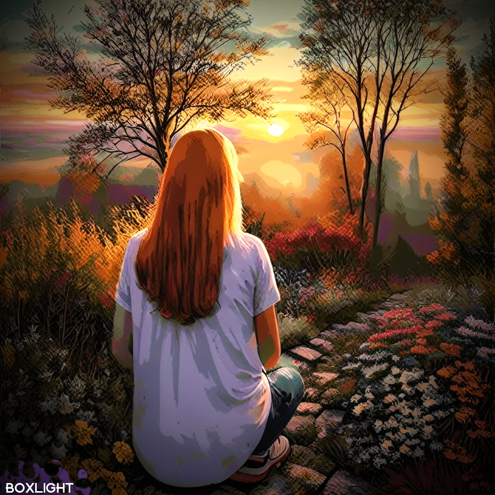
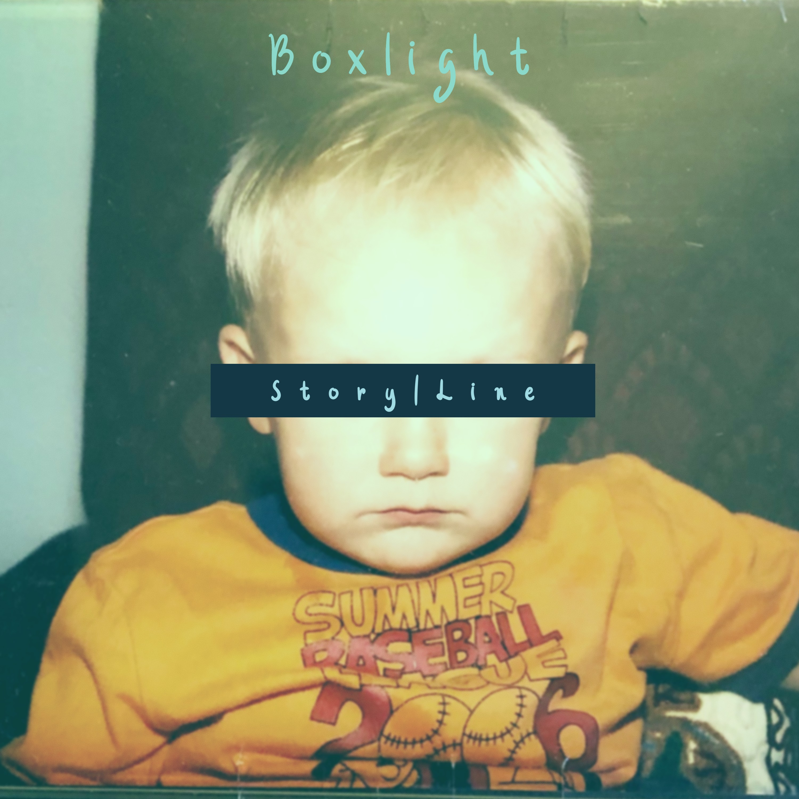
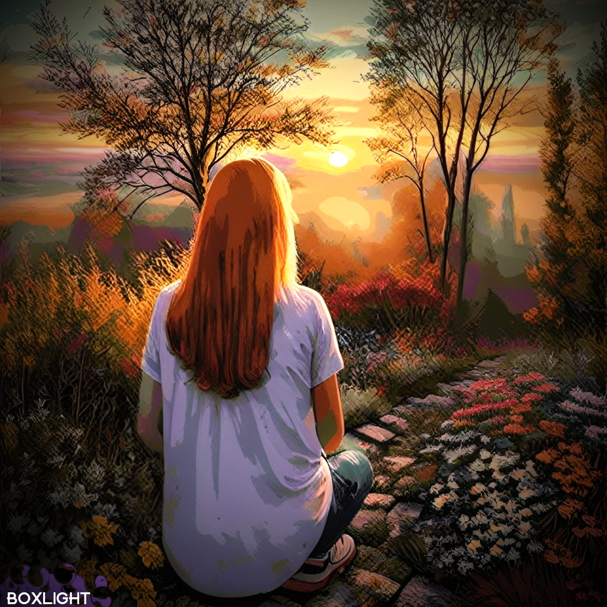
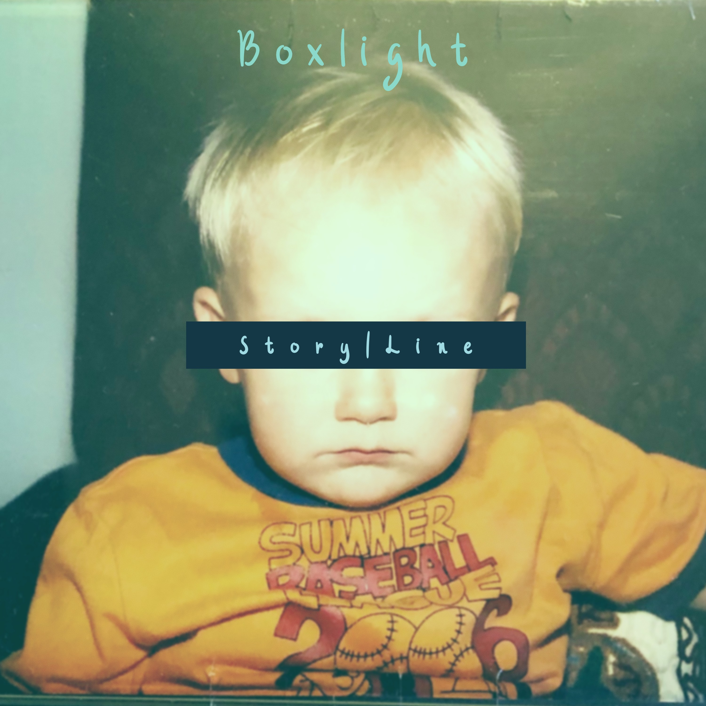
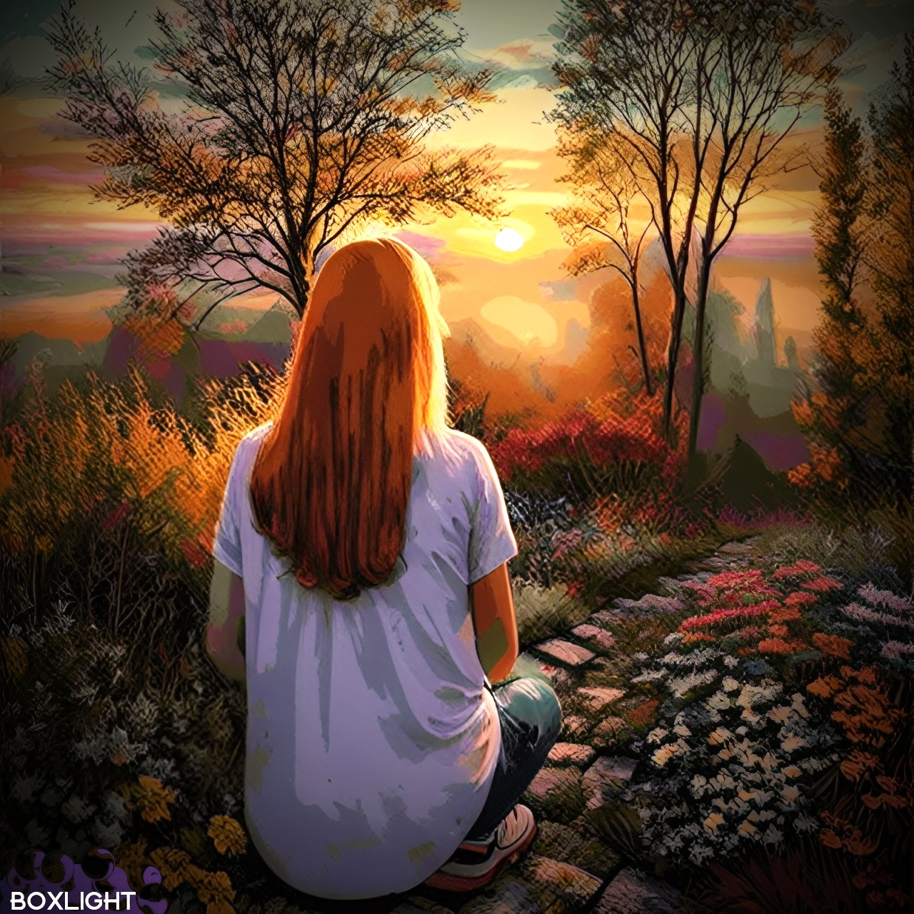
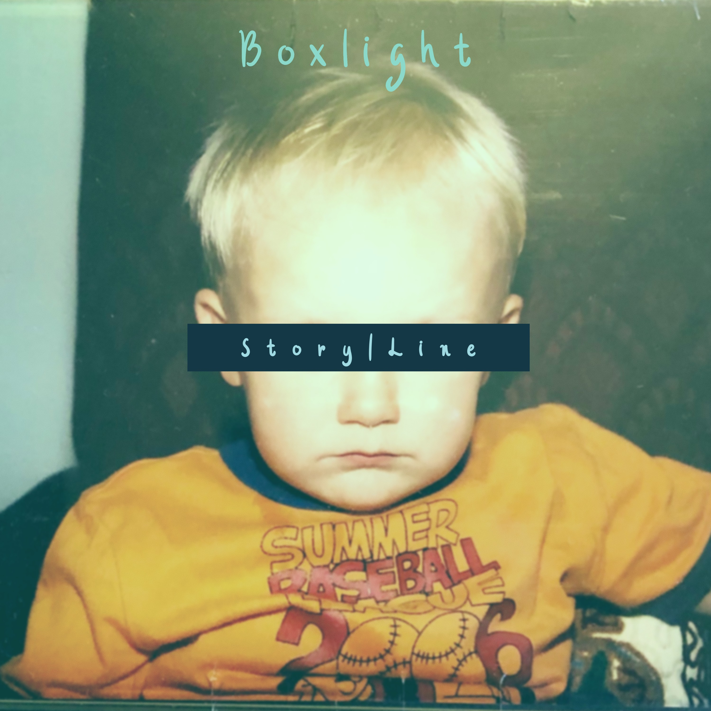

David Jones / Boxlight / EZ DSP


David Jones / Boxlight / EZ DSP

I am an audio programmer and musician who loves building systems that aid in the creation of music. I have built systems in C++, python, java, javascript, JUCE, MaxMSP, TensorFlow, PyTorch, and Pure Data. I have deployed these systems over a variety of platforms including VSTs, the web, Daisy Seed (bare metal), Arduino, Raspberry Pi, Unity, and Unreal Engine. I have built a variety of embedded systems on both bare metal and RTOS systems. These systems have ranged from guitar effects processing units to gestural MIDI controllers to a drum machine and looper instrument. I have built, trained, and deployed several Machine Learning models, primarily using deep learning techniques. I have deployed these models on the web using websockets and in Ableton Live using Max for Live devices. I also enjoy sound design and love modular synthesis techniques in both the analog and digital domains. I have designed games in Unity, Processing, and P5.js with both live score generation and traditional sound design techniques.
I began my journey as a musician in my senior year of high school when the pandemic hit in 2020. I, like many, began producing music and quickly fell in love with the entire process. I fell so deeply in love that after only about a year of making music, I knew that this was a passion I would never lose. As such, I applied to the Music Technology program at Georgia Tech and I got in! After a semester of imposter syndrome in all of my music-related classes, I finally had my first class on audio programming. This class opened my eyes to the beauty that can be found in programming, especially in programming for audio. As my college journey progressed, I developed an extreme passion for audio programming, moving from project to project, trying to learn how to deploy audio on every platform (i.e. plugins, web, embedded, etc.). In this process, I learned that my passion for programming and engineering extends far beyond just audio. As I continue to develop software and devices, I become increasingly obsessed with the unique set of problems that can only be solved through the design of complex systems.
The Kitchen is a hybrid musical instrument that seemlessly combines the functionalities of a drum machine and a looper. The Kitchen is designed for live performance, incorporating a variety of features that encourage improvisation through selective randomization. The instrument was designed using RNBO embedded on a Raspberry Pi. It is the first instrument of its kind (in both audio funtionality and control dimensionality) to be developed using RNBO. This project was carried out in an effort to prove the efficacy of RNBO as a development environment for complex musical instruments.
Skills: Raspberry Pi (RTOS), RNBO, Python, Linux, OSC, Fusion 360, Shell Script, Multiprocessing, CircuitPython, SPI, soldering
EZ Dist is a distortion and overdrive plugin that uses physical modeling to produce accurate simulations of the circuits that are in many distortion and overdrive pedals. This project takes inspiration from this paper on physical modeling. The circuits are simulated by separating the entire circuit into blocks, finding the transfer function of each block, and using the bilinear transform to digitize the analog filter.
Skills: C++, JUCE, DSP, Physical Modeling, UI/UX Design
Rust sampler is a VST3 audio plugin and crate built in Rust. The internal sampler engine has ADSR, sustain looping with two modes and optional crossfading, three different types of samplers, and file loading for wav and sfz files. The RustSampler crate contains all of the sampler engine and voice structs that would be necessary to build a sampler using rust. There is also very thorough inline documentation and helper functions for almost anything a sampler might need.
Skills: Rust, Github Project Management, DSP, API Design, Multithreading
EZ DSP is a portable, fast, low-footprint audio effects library written in C++. EZ DSP is design to be usable in most audio processing contexts as all of its processors run on a sample-by-sample basis. So far, the library has been tested in JUCE, directly using CPAL, and on the daisy seed microcontroller. Each audio processing object is designed to be very easy to understand and modify as developers may see fit. As such, documentation is extensive and variable names are meant to be as explicit as possible.
Skills: C++, API Development, Unit Testing, Git, DSP
DRUNNK AI is an interactive website designed to allow users to reimagine and resynthesize any sound they please through the use of "games." Each "game" is designed to interact with the sound in different ways. When a user selects a file or creates a recording, that subsequent audio file is sent to a WebSockets server that extracts the inferences from each model and sends the resultant audio back to the site's front end. Once the audio is loaded, the user is free to interact with the file in a virtually infinite number of ways, using any combination of the "games" with the site's buit-in audio effects.
Skills: Python, TensorFlow, Pytorch, Deep Learning, RAVE, WebSockets, p5.js
LoopFx is a looper and multi-effects guitar pedal built using the Daisy Seed embedded platform for music. It has a modular signal chain that can be altered using an encoder. The device has six rotary potentiometers that can be used to change the selected effect. There is a display with a very simple user interface for easy navigation through the effect parameters and the various modes.
Skills: C++, STM32, Bare-Metal, Git, DSP, Arm, EasyEDA, i2c, soldering
Skills: C++, DSP, JUCE
Skills: C#, Unity, Pure Data, libPd, FMOD, Sound Design
Skills: C#, Unity, Pure Data, libPd, FMOD, Sound Design
Skills: MaxMSP, DSP, Sound Design, Instrument Design
Skills: Processing, Multithreading, UI Design